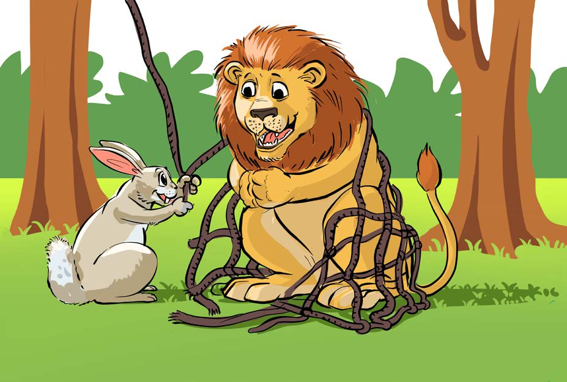

Maswali
- 1. Wiki ina siku ngapi?
- 2. Taja majina ya siku za wiki.
- 3. Kuna umuhimu gani wa kujifunza siku za wiki?
- 4. Eleza kazi unazofanya kila wiki.
Shughuli ya Tano
Tamba na wenzako ngonjera uliyoisoma.
Kusoma hadithi
Soma hadithi hii kwa sauti na kwa usahihi:
Simba na Sungura

87